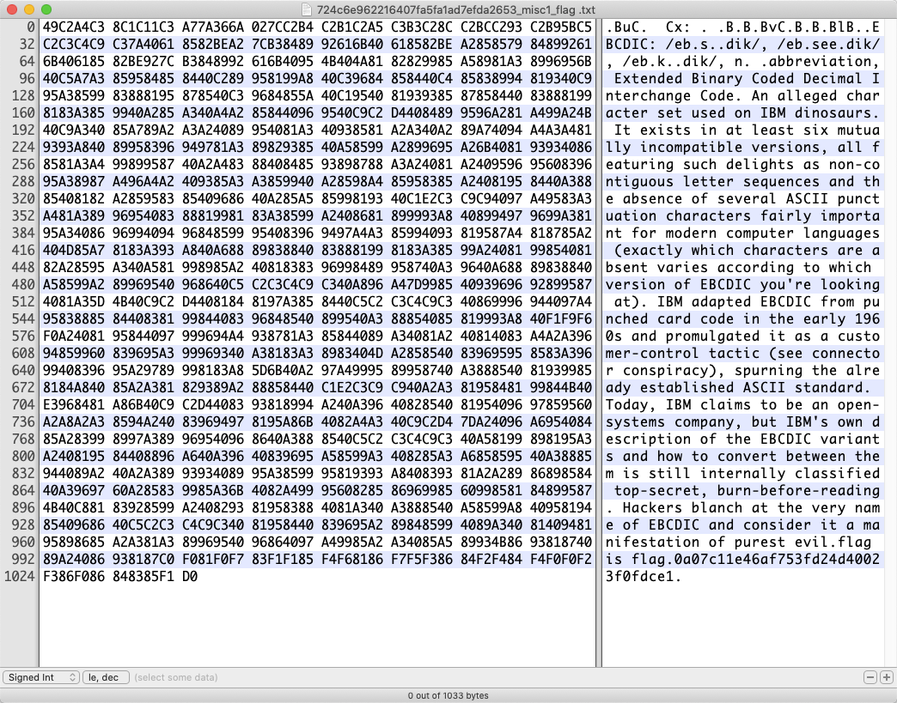
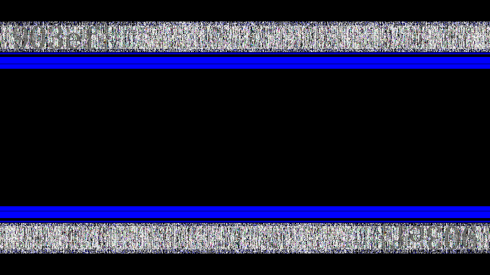

133 misc2
下载得到txt文件，打开发现大量乱码。

可以看到有大量相同的字符间隔连续出现，不像是特定的文件格式。考虑字符编码，可以尝试用Word打开。

UTF-8下为乱码，逐个尝试其他编码格式，直到找到可读编码为止。但对比原题和XCTF提供的附件后发现附件有问题，先记录一下Writeup的后续步骤：
切换到Ext Alpha 小写字母或IBM EBCDIC，文件可读，在文本末尾有flag。

或者在十六进制编辑器（010Editor也可以）中切换编码也可以得到可读文本。

flag：flag{0a07c11e46af753fd24d40023f0fdce1}
134 santa-walks-into-a-bar
下载得到list.zip和santa-id.png。

list.zip中是大量png图片，内容均为二维码。

注意到santa-id.png上的ID：7ab7df3f4425f4c446ea4e5398da8847，可以发现存在对应名称的图片，扫码得到：
Now I have Xavier in 1b3ff9ed24dfa790c7a3d68902cbdaee
再扫码1b3ff9ed24dfa790c7a3d68902cbdaee.png得到：
Next kiddie is Samuel in aa5e9b88521b4e209615fdeb6e26c640
可以看出每个二维码内容都提示了下一条信息所在，尝试写脚本循环处理：
from pyzbar import pyzbar
from PIL import Image,ImageEnhance
def get_ewm(img_adds):
img = Image.open(img_adds)
txt_list = pyzbar.decode(img)
for txt in txt_list:
barcodeData = txt.data.decode("utf-8")
return barcodeData
path = 'C:/Users/Administrator/Desktop/1.png'
img = Image.open(path)
txt_list = pyzbar.decode(img)
print(txt_list)
for txt in txt_list:
print(txt)
barcodeData = txt.data.decode("utf-8")
print(barcodeData)
print(txt_list[0].data.decode("utf-8"))
运行脚本直到循环报错。

可以看到报错前最后的输出是：
Y0ur gift is in goo.gl/wFGwqO inugky3leb2gqzjanruw42yk
访问goo.gl/wFGwqO网址得到flag。（好像已经没法访问了……强行靠关键字搜到了flag。）
flag：3DS{I_h0p3_th4t_Y0u_d1d_n0t_h4v3_ch4ck3d_OnE_by_0n3}
135 USB-probing
下载得到pcap文件，wireshark打开。发现全部都是USB流量包，尝试键盘和鼠标数据发现都不是，同时发现有几个数据包长度特别大，可能有文件传输。先对流量包按长度排序：

发现最大的101号数据包中有PNG和IHDR字符串，疑似png图片文件。显示分组字节，并保存为png文件。Linux下打开图片找到flag。

flag：ALEXCTF{SN1FF_TH3_FL4G_OV3R_U58}
136 Hidden Write
下载得到png图片。十六进制编辑器（010Editor）打开提示数据模板出错，提示该文件结构可能有改动。
查找png文件头部和文件尾部特征字符串IHDR、IEND，发现各存在3处：

整个文件结构是：
PNG头-IHDR-IEND-IHDR-IEND-IHDR-IEND-尾部额外不明字符串
尝试将三组IHDR-IEND间数据分别与PNG头组合成三张png图片。使用zsteg逐张查看，在3.png中找到LSB隐写信息：
root@kali:~/Desktop# zsteg 3.png
[?] 15 bytes of extra data after image end (IEND), offset = 0x2dc4a
extradata:0 .. text: "\r\n\r\nef4526a41ea"
imagedata .. file: dBase III DBT, version number 0, next free block index 4278124033
b1,b,lsb,xy .. text: "\nRFbSBcvG"
b1,bgr,lsb,xy .. text: "hxb2018{490fe1033073e985"
b2,r,lsb,xy .. file: 5View capture file
b2,r,msb,xy .. file: VISX image file
b2,g,lsb,xy .. file: 5View capture file
b2,g,msb,xy .. file: VISX image file
b2,b,lsb,xy .. file: 5View capture file
b2,b,msb,xy .. file: VISX image file
b2,rgb,lsb,xy .. file: 5View capture file
b2,rgb,msb,xy .. file: VISX image file
b2,bgr,lsb,xy .. file: 5View capture file
b2,bgr,msb,xy .. file: VISX image file
b4,r,msb,xy .. text: ["w" repeated 9 times]
b4,g,msb,xy .. text: ["w" repeated 12 times]
b4,b,msb,xy .. text: ["w" repeated 10 times]
b4,rgb,msb,xy .. text: ["w" repeated 28 times]
b4,bgr,msb,xy .. text: ["w" repeated 29 times]
显然flag还有其他部分，继续看1.png和2.png。Stegsolve打开2.png，在Blue plane 0处有明显的横向噪点，尝试盲水印。

root@kali:~/Desktop/blind-watermark-python3/BlindWaterMark# python bwm.py decode 1.png 2.png flag.png
image<1.png> + image(encoded)<2.png> -> watermark<flag.png>

得到：
903ef}
结合原始图片末尾的一段额外不明字符串：

拼接得到flag。
flag：hxb2018{490fe1033073e985ef4526a41ea903ef}
攻防世界上本题的题目和标准答案对不上，后台认为标准答案是hxb2018{1e30f3b836d78d25c78cd89c18c20b4a}。
137 happy_puzzle
下载得到puzzle文件夹，内含info.txt和26个.data文件。info.txt内容为：
mode=RGB size=400x400
看来本题可能需要将所有数据恢复成一张400x400大小的图像。图像按数据块的形式存储，联想到png格式。同时考虑到除mrxtfkzj.data外，其他data长度都是10240，mrxtfkzj.data应该是最后一块。
先用画图创建一张400x400的空白png图片，然后用十六进制编辑器打开：

PNG文件结构如下：
文件头-IHDR-IDAT（长度-数据块-CRC）-IEND
其中多处存在CRC32校验
文件头和IHDR部分可以直接从空白图片取得。
CRC校验在Windows系统下可以忽略，用0填充。
IDAT的长度和数据内容已知，每块前方加上00 00 28 00（0x2800=10240），后接00 00 00 00（填充CRC校验）即可。
IEND在Windows系统下也可以不需要。
问题在于确定10240长度的25个data的顺序。
采取以下做法：
在文件头和IHDR后依次尝试接25个data，其中必有一个能够显示出部分图片，即可确定这一块。然后继续尝试下一块即可。最后可以确定顺序为：
yvxmeawg.data rnydeiho.data uozjmdnl.data fhnkotmb.data jlxphwfm.data yscijlzx.data ciaoxptf.data blczioav.data jtxsbevz.data lstjobzi.data pyusgabf.data wgkapjbh.data xufbyndk.data csizrgxn.data oaeqnubi.data gpiuezjw.data tihzkoyu.data hbctmwqj.data ycqzmbrw.data fkjhepcs.data kczwtlrd.data dwelszrk.data uilqywot.data xufnmacj.data jrbiznkl.data mrxtfkzj.data
最后得到的图片是：

另外这里有个脚本可以拼接数据，留作参考。
flag：unctf{312bbd92c1b891e1827ba519326b6688}
138 godwave
下载得到wav文件，audacity打开。

看起来好像是摩斯电码，但实际上不是。仔细观察会发现是以64个点为单位，有时振幅高，有时振幅低。以高位为1，低位为0，整理得到的数据只有10和01组成，显然是曼彻斯特编码。
使用如下脚本将wav文件中的数据提取：
输出曼彻斯特编码：
10010101100101100110011001010101011001011010100101100101011010100101010110100110010101011001100101010110100110010101010110011001010101010101010101010101010101010101010101010101010101011010011001100101100101100110010110010101011001010110010101100110010110010101010101010101010101010101010101010101010101100101100110100101010101010101010101010101010101010101010101010110010110011……（后略）
以“10”为1，“01”为0转换为二进制数据，然后再转换为十六进制：
a = open('C:/Users/Administrator/Desktop/output.txt', 'r').read()
b = ''
for i in range(0, len(a), 2):
if a[i: i+2] == '10':
b += '1'
elif a[i: i+2] == '01':
b += '0'
for i in range(0, len(b), 8):
n = b[i: i+8]
n = int(n, 2)
n = hex(n)
print(str(n)[2:].zfill(2), end = '')
输出；
89504e470d0a1a0a0000000d494844520000012c0000012c0802000000f61f1……（后略）
从文件头来看，显然是PNG格式图片。用十六进制编辑器将其保存。

最后扫码得到flag。
本题可以搜索原题“JarvisOJ Misc 上帝之音”找到Writeup。部分完全相同思路的题目的Writeup：
flag：PCTF{Good_Signal_Analyzer}